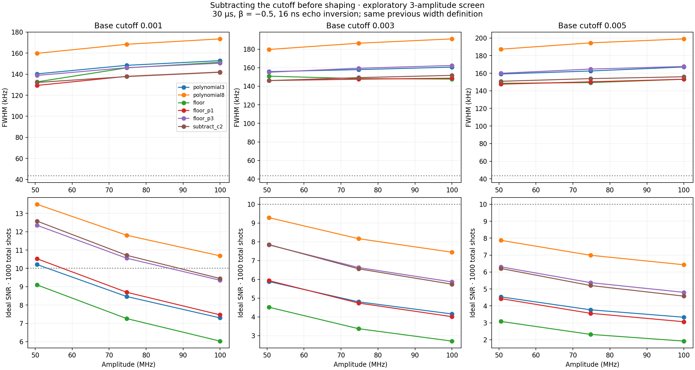

Exploratory screen at 50.505, 74.747, and 100 MHz only. This is not a full 100-amplitude robustness test. The same 30 µs, 16 ns sine echo inversion, β = −0.5, three-level model, T₁ = 51.24 µs, T₂ = 7.31 µs and α = −216 MHz apply.
Best new candidate at cutoff 0.001: cancel the endpoint value and its first two derivatives by subtracting a smooth background. This improves width and visibility relative to the cubic at the three checked amplitudes. It does not reach the 43.54 kHz coherence reference.
| Shape | FWHM (kHz) | Ideal SNR | Pe contrast |
|---|---|---|---|
| Original cubic | 152.85 | 7.299 | 0.224 |
| Original p = 8 | 173.53 | 10.684 | 0.316 |
| Subtract cutoff only | 151.34 | 6.031 | 0.187 |
| Subtract + linear window | 142.01 | 7.463 | 0.229 |
| Subtract + cubic window | 150.46 | 9.352 | 0.281 |
| C2 endpoint subtraction | 141.86 | 9.447 | 0.284 |
Let f(t) = [1 + (t/σ)²]−1/2, σ = 15/√(c−2−1) µs, x = 2t/L, y = 1 − x², and a = 1 − c². All shapes have support |t| ≤ L/2.
The direct floor subtraction is g(t) = [f(t) − c]/(1 − c).
Its value reaches zero, but its slope does not. Multiplication by y or y³
gives the mild and cubic window controls.
The C2 construction is
g(t) = [f(t) − c(1 + ay/2 + 3a²y²/8)] /
[1 − c(1 + a/2 + 3a²/8)].
This subtracts the quadratic Taylor expansion in y of f = c(1 − ay)−1/2 at each endpoint. Consequently g, g′ and g″ vanish there. The denominator restores g(0) = 1. The waveform is I = A s(t)g(t), with Q = −β I′/(2π|α|). There is no signed-pulse peak or area normalization. The cutoff still determines σ; zero endpoints do not remove core-width dependence.

Curves join three sampled points only. FWHM uses the same linear background at |detuning| ≥ 0.4 MHz in the ±0.5 MHz sweep. SNR uses ideal binary Pe readout, 500 center shots and 250 at each ±0.45 MHz shoulder. It is not 10% population contrast.
18 maps, each 3 states × 3 amplitudes × 201 detunings. Analytic derivatives were checked numerically. Original p = 3 and p = 8 populations match the previous study within 10⁻¹⁰. Halving dt from 0.5 to 0.25 ns for the new floor, floor_p1, and C2 cases at cutoff 0.001 changes widths by at most 8.84 Hz. This screen does not establish performance between the three amplitudes, or independence from background choice, and contains no hardware validation.
Parameters, all metrics, checks and source hashes · Metrics CSV · Figure PDF
Reproduce with .venv/bin/python scripts/screen_cutoff_subtraction.py.